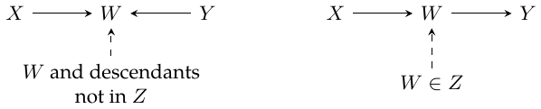

Lecture 13: Structural equation modeling
SEM means structural equation model. Recall the earlier equation \(Y_i=\alpha+W_i\tau+\varepsilon_i\): set \(W_i=w\) and observe \(Y_i(W_i=w)=\alpha+w\tau+\varepsilon_i\).
Nonparametric SEMs
Let \((X_1,\ldots,X_p)\) be \(p\) random variables with joint distribution \(P\). Suppose \(P\) can be represented by a directed acyclic graph (DAG) \(G\). This means that \[P(X_1,\ldots,X_p)=\prod_{j=1}^p P(X_j\mid\operatorname{pa}_j),\tag{13.2}\] where \(\operatorname{pa}_j\) is the set of parents of \(X_j\) in \(G\). Equivalently, \[\operatorname{pa}_j=\{X_i:E_{ij}=1\},\] with \(E_{ij}\) indicating an edge \(X_i\to X_j\). Assume further that deterministic functions \(f_j\), \(j=1,\ldots,p\), yield \[X_j=f_j(\operatorname{pa}_j,\varepsilon_j),\qquad \varepsilon_j\sim F_j,\quad\text{mutually independent}.\tag{13.3}\] An SEM/DAG specifies each node through its parents and noise.
Even when upstream parent values change, \(f_j(\cdot)\) does not change. \(\textcolor{red}{\longrightarrow}\) \(X_j=f_j(\operatorname{pa}_j,\varepsilon_j)\)
This gives a concrete meaning: \(f_j\) can be viewed as the distributional index for \(X_j\) conditional on its parents.
A causal query externally sets the values of some nodes and examines how other nodes’ distributions change. For disjoint node sets \(W,Y\subset X\), write the effect of setting \(W=w\) on \(Y\) as \[P[Y\mid\operatorname{do}(W=w)].\] In (13.3), delete the equations associated with \(W\) and replace \(W\) by \(w\) in the other equations. For an intervention on \(X_j\), for discrete variables the truncated factorization is \[P[X\mid\operatorname{do}(X_j=x_j)] =\begin{cases} \displaystyle\frac{P[X]}{P[X_j=x_j\mid\operatorname{pa}_j]},&X_j=x_j,\\ 0,&\text{otherwise}. \end{cases}\]
1? \(\textcolor{blue}{\longrightarrow}\) The denominator \(P[X_j=x_j\mid\operatorname{pa}_j]\)
The forced node has new probability mass \(1\) at \(x_j\). The denominator removes its old observational mechanism; it is not replaced by \(1\).
The do-calculus: separation and graph modifications
For disjoint node sets \(X,Y,Z\), consider an undirected path \(p\) between a node in \(X\) and a node in \(Y\). The path is blocked by \(Z\) if it contains a node \(W\) such that either:
\(W\) is a collider on \(p\), and neither \(W\) nor any descendant of \(W\) is in \(Z\); or
\(W\) is not a collider on \(p\), and \(W\in Z\).
The two path sketches (solid arrows are causal; dashed arrows link annotations):

\(Z\) \(d\)-separates the node sets when it blocks every path between them.
If \(Z\) \(d\)-separates \(X\) and \(Y\), (13.2) implies \(X\perp Y\mid Z\), written \[(X\perp Y\mid Z)_G.\] Graph notation:
\(G_{\overline X}\) deletes edges pointing into \(X\).
\(G_{\underline X}\) deletes edges leaving \(X\).
\(G_{\underline X\overline Z}\) deletes edges leaving \(X\) and entering \(Z\).
The three rules
\(\operatorname{do}(X=x)\) removes incoming edges, hence the overbar on \(X\). For disjoint node sets \(X,Y,Z,W\):
Insertion/deletion of observations. If \[(Y\perp Z\mid X,W)_{G_{\overline X}},\] then \[P[Y\mid\operatorname{do}(X=x),Z=z,W=w] =P[Y\mid\operatorname{do}(X=x),W=w].\]
Action/observation exchange. If \[(Y\perp Z\mid X,W)_{G_{\overline X\underline Z}},\] then \[P[Y\mid\operatorname{do}(X=x),\operatorname{do}(Z=z),W=w] =P[Y\mid\operatorname{do}(X=x),Z=z,W=w].\]
Insertion/deletion of actions. If \[(Y\perp Z\mid X,W)_{G_{\overline X\overline{Z(W)}}},\] where \(Z(W)\) consists of nodes in \(Z\) that are not ancestors of any node in \(W\) in \(G_{\overline X}\), then \[P[Y\mid\operatorname{do}(X=x),\operatorname{do}(Z=z),W=w] =P[Y\mid\operatorname{do}(X=x),W=w].\]
My mnemonic.
The common \(\operatorname{do}(X=x)\) and the extra bars/underlines. \(\textcolor{red}{\longrightarrow}\) The three do-calculus rules above.
All three rules contain \(\operatorname{do}(X=x)\); the bar over \(X\) supplies that intervention. Then, when the appropriate separation condition holds, deleting outgoing edges from \(Z\) lets us exchange “do \(Z\)” with “control for \(Z\).” Deleting incoming edges to \(Z(W)\) lets us remove “do \(Z\)” entirely. \(Z(W)\) is the part of \(Z\) with no ancestry relation to \(W\) of the prohibited kind.
Repeatedly apply do-calculus to reduce a causal query to an observable query about \(P\): an expression without the do-operator, depending only on observed random variables. Do-calculus is complete: if it cannot reduce the causal query to such an observational expression, the query is not nonparametrically identifiable in the stated SEM framework.
Completeness means that no valid reduction exists in the specified causal model and observed-variable set. An unsuccessful attempt alone does not establish nonidentification. Adjustment formulas also require the relevant support.
Example 1: the back-door criterion
Take three disjoint node sets \(X,Y,W\) and query \(P[Y\mid\operatorname{do}(W=w)]\). Suppose \(X\) contains no descendants of \(W\) and \(X\) \(d\)-separates \(W\) and \(Y\) after the outgoing edges of \(W\) are removed: \[(Y\perp W\mid X)_{G_{\underline W}}.\tag{13.8}\] Then \[\begin{aligned} P[Y\mid\operatorname{do}(W=w)] &=\sum_xP[X=x\mid\operatorname{do}(W=w)] P[Y\mid X=x,\operatorname{do}(W=w)]\\ &=\sum_xP[X=x]P[Y\mid X=x,\operatorname{do}(W=w)]\\ &=\sum_xP[X=x]P[Y\mid X=x,W=w]. \end{aligned} \tag{13.9}\] The second equality uses the fact that \(X\) is not downstream of \(W\); the last is rule 2. The first replacement is linked to \((X\perp W)_{G_{\overline W}}\).
My interpretation of the graphical condition.
Think of \(W\) and \(Y\) as single nodes. Removing the outgoing arrows from \(W\) removes its downstream causal influence on \(Y\); what remains is the dependence that the adjustment set must block. If \(X\) blocks every path between \(W\) and \(Y\) that points into \(W\), it blocks the back-door paths.
Suppose \(W\) and \(Y\) are single nodes and \(W\) has no descendants other than \(Y\) in \(G\). Cutting the outgoing arrows of \(W\) removes its downstream influence. Then (13.8) becomes \[F_Y(w)\perp W\mid X,\qquad F_Y(w)=f_Y(w,X,\varepsilon_Y).\tag{13.10}\]
Infer this graphically; a concrete conditional-independence argument. \(\textcolor{blue}{\longrightarrow}\) \(F_Y(w)\perp W\mid X\) in (13.10)
All factors other than \(w\) remain unspecified in \(X_j=f_j(\operatorname{pa}_j,\varepsilon_j)\).
Example 2: the front-door criterion

We want \(P[Y\mid\operatorname{do}(W=w)]\). Since \(U\) is unobserved, we cannot apply back-door adjustment using \(X=U\). But suppose \(Z\) fully mediates the effect of \(W\) on \(Y\) and is not affected by \(U\). \[\begin{aligned} P[Y\mid\operatorname{do}(W=w)] &=\sum_zP[Z=z\mid\operatorname{do}(W=w)] P[Y\mid Z=z,\operatorname{do}(W=w)]\\ &=\sum_zP[Z=z\mid W=w] P[Y\mid Z=z,\operatorname{do}(W=w)]. \end{aligned}\]
No back-door path connects \(W\) to \(Z\). \(\textcolor{red}{\longrightarrow}\) The replacement of \(\operatorname{do}(W=w)\) by \(W=w\) in the \(Z\) factor.
Next, \[\begin{aligned} P[Y\mid Z=z,\operatorname{do}(W=w)] &=P[Y\mid\operatorname{do}(Z=z),\operatorname{do}(W=w)] &&\text{\textcolor{red}{(rule 2)}}\\ &=P[Y\mid\operatorname{do}(Z=z)]&&\text{\textcolor{red}{(rule 3)}}\\ &=\sum_{w'}P[W=w']P[Y\mid Z=z,W=w']&&\text{\textcolor{red}{(back-door)}}. \end{aligned}\] Combining the steps, \[P[Y\mid\operatorname{do}(W=w)] =\sum_zP[Z=z\mid W=w] \sum_{w'}P[W=w']P[Y\mid Z=z,W=w'].\tag{13.11}\]
Overall \(W\to Y\) effect. \(\textcolor{red}{\longrightarrow}\) \(W\to Z\): \(P(Z=z\mid W=w)\); \(Z\to Y\): \(\sum_{w\prime}P(w\prime)P(Y\mid z,w\prime)\)
My observation: although this directly describes an intervention \(\operatorname{do}(W=w)\), it still has to integrate over the observational distribution \(P[W=w']\).
Even an intervention on \(W\) integrates an observational distribution. \(\textcolor{black}{\longrightarrow}\) The \(P[W=w']\) factor in (13.11).
Example 3: instrumental variables

We would like to estimate \(P[Y\mid\operatorname{do}(W=w)]\). In this graph, do-calculus alone does not identify the full intervention distribution; the instrument does not remove the unobserved \(W\)–\(Y\) confounding.
For the LATE analysis, the graph alone does not suffice; monotonicity is an additional assumption. Even then, we may identify only a nonstandard causal quantity such as LATE. Encoding monotonicity in an SEM is itself complicated.
SEMs and potential outcomes
For a two-node graph \(W\to Y\), the two formulations coincide: the potential outcome \(Y_i(w)\) and the SEM expression \(f_Y(w,\varepsilon_Y)\) can be mapped one to one.
More generally, how do the formulations compare? Potential-outcome notation asks what \(Y\) would be if specified variables were set to particular values. The SEM formulation is flexible enough to express nested operations. For the graph \(W\to Z\to Y\) together with \(W\to Y\), define \[Z(w):=f_Z(w,\varepsilon_Z).\]

The nested counterfactual is \[Y(0,Z(1)) =f_Y\bigl(w=0,z=f_Z(w=1,\varepsilon_Z),\varepsilon_Y\bigr).\] Different counterfactual settings can be combined. Can potential-outcome notation do this without drawing a graph?
Can the SEM identify effects of such nested operations? Is that additional power a drawback, or is the weaker potential-outcome model too restrictive?
Identifiable? \(\textcolor{red}{\longrightarrow}\) The nested counterfactual \(Y(0,Z(1))\).
Potential outcomes also express this as \(Y(0,Z(1))\); no graph is required merely to define the nested variable. Identification depends on substantive assumptions, rather than the choice of notation.
For the fully observed graph with mutually independent structural errors and adequate support, \(E[Y(0,Z(1))]=\int E[Y\mid W=0,Z=z]\,dP(Z=z\mid W=1)\). This uses cross-world independence from that SEM; latent mediator–outcome confounding or weaker assumptions can invalidate it.